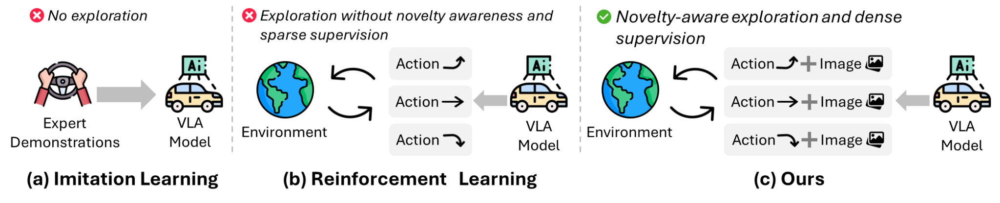
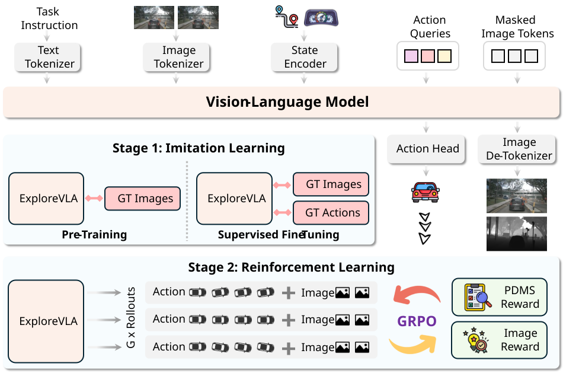
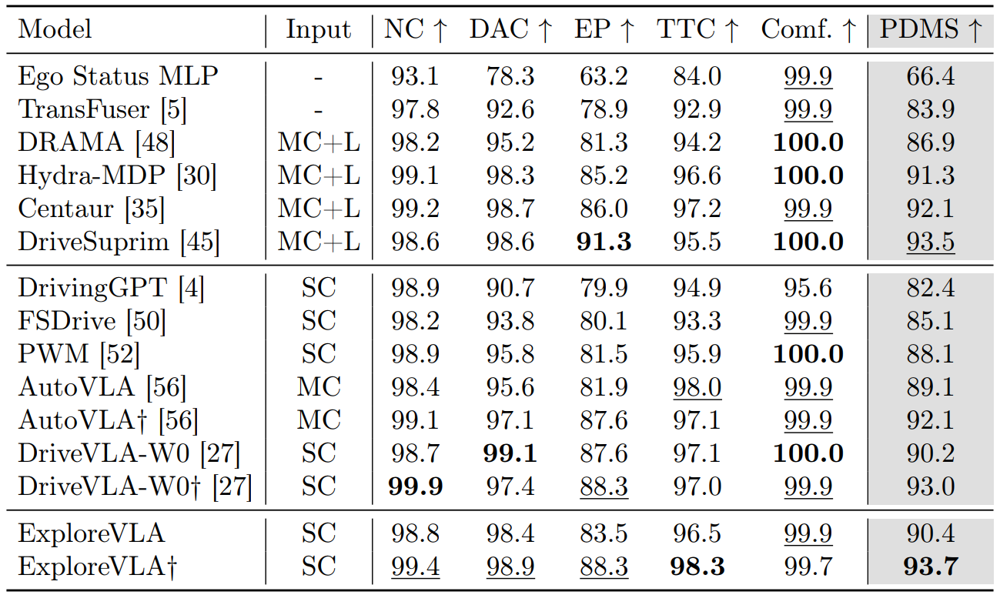
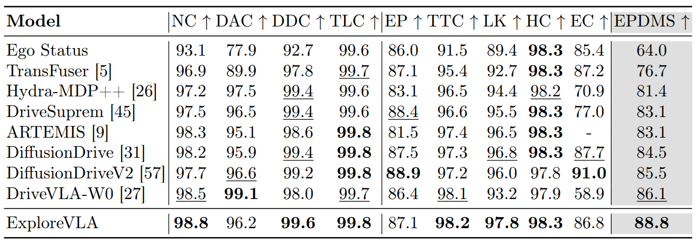

1. World Model as Exploration Compass: We repurpose the world model's image prediction uncertainty as an intrinsic exploration signal, naturally measuring trajectory novelty relative to the training distribution.
2. Safety-Gated Exploration: A PDMS-gated reward ensures only safe out-of-distribution trajectories receive exploration bonuses, enabling the policy to expand its behavioral repertoire without compromising driving safety.
3. SOTA Performance: ExploreVLA achieves 93.7 PDMS and 88.8 EPDMS on NAVSIM using only a single front-view camera, outperforming multi-sensor methods.

Each video shows our model on the top and the baseline without dense world modeling on the bottom.
Table 1: Quantitative comparison on NAVSIM v1. The best performance is marked in bold, and the second best is underlined.

Table 2: Quantitative comparison on NAVSIM v2. The best performance is marked in bold, and the second best is underlined.

@article{sheng2026explorevla,
title={ExploreVLA: Dense World Modeling and Exploration for End-to-End Autonomous Driving},
author={Sheng, Zihao and Ye, Xin and Luo, Jingru and Chen, Sikai and Ren, Liu},
journal={arXiv preprint arXiv:2604.02714},
year={2026}
}